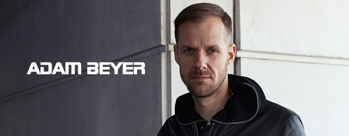

Mainstage: 22:00-23:00!
Adam Beyer ist ein Techno-DJ und -Produzent aus Schweden.
1990 kaufte er seinen ersten Plattenspieler und mischte noch mit Schallplatten.
Seine bevorzugten Stilrichtungen waren Hip-Hop, Acid und Techno.
1995 begann er nach seinem Schulabschluss seiner Liebe zur Musik beruflich
nachzugehen, arbeitete in einem Plattenladen in Stockholm und veröffentlichte
unter einer Vielzahl von Pseudonymen auf verschiedenen Labels und tourte als DJ
durch Skandinavien. Im selben Jahr veröffentlichte er die Platte Drumcode 1, mit der
er seinen eigenen Stil entdeckte und die ihn innerhalb der Szene bekannt machte.
Der erfolgreiche Schwede ist ein renommierter Produzent in der Techno-Szene und
gründete 3 Plattenlabels – Drumcode, Truesoul und Madeye.
Beyer verhalf Stockholm zu einer wichtigen Position innerhalb der Techno-Szene.